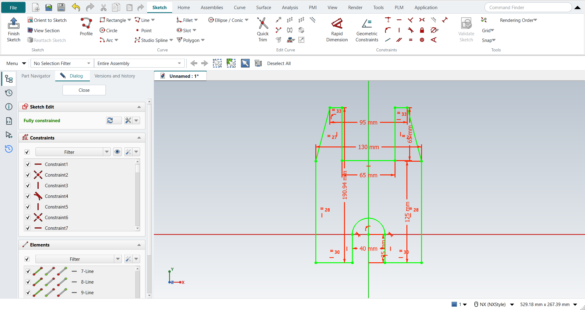

Tutorial AF: Arbor Press Base
| Source |
Ming C. Leu, Wenjin Tao, Amir Ghazanfari and Krishna Kolan, NX 12 for Engineering Design (Missouri University of Science and Technology), section 3.5.1 |
| You learn |
Profile with lines and an arc, geometric constraints before dimensions, Equal, Collinear, Tangent, a fully defined sketch, Extrude from a selected sketch |
| Sizes |
from the book’s dimension figure: 130 wide, 190.94 high; the outer sides 125; the top 95 wide with a notch 65 wide and 65 deep; a slot 40 wide ending in a semicircle whose centre is the origin, 35 above the bottom edge; extruded 60 mm |
Step by step
1. A new part and a sketch
Ctrl+N for a new part. Click Sketch on the Home tab, pick the XC-YC plane and press MB2.
2. Profile: lines and one arc
Press Z for Profile. Start at the bottom left and click round the outline: along the bottom to the slot, up its left side, then press M three times to switch to a tangent arc and click the slot’s right side. Where the book clicks Line in the Profile dialog, press M twice: FreeCAD would otherwise carry on with a line held tangent to the arc. Continue with lines down the slot, along the bottom, up the right side, through the notch at the top and down the left side, and click the first point: that closes the outline. MB2 ends Profile. Draw it roughly. The constraints bring it to shape. Each straight line gets Horizontal or Vertical as it is drawn, except the two slanted ones. FreeCAD has no automatic dimensions to switch off, so the book’s note about Continuous Auto Dimensioning does not apply.
3. Geometric constraints first
-
Point on Curve: pick the Y axis and the arc’s centre and click Point on Curve, then the X axis and the centre.
-
Equal: the two slanted lines, then the two long vertical lines.
-
The bottom lines: pick both and click Collinear, then Equal.
-
Tangent: the arc and the slot’s sides, where it is missing. Profile made the first one; the line after the arc needs it.
-
The book makes the slot’s two short sides Equal. Here FreeCAD reports that as redundant, because the tangency and the centre on the X axis already make them equal, so leave it out.
-
The two short top lines: Collinear and Equal, as at the bottom. The notch’s two sides are then equal too.
4. Dimensions, biggest first
Click Distance with the picks selected and type each value: the height 190.94, the width 130, the right side 125, the top 95, the notch 65 wide and 65 deep, the slot 40, and the centre 35 above the bottom. The Dialog panel then says Fully constrained and the sketch turns green.

The replay
| # | In the book (NX) | In FreeCAD NX-Style | Result | Notes |
|---|---|---|---|---|
AF1 |
Create a new file (Arborpress_base) |
Ctrl+N, Model template |
same |
new document ['Unnamed']; the name is given when it is saved |
AF2 |
Sketch, OK (the XC-YC plane) |
ribbon 'Home › Direct Sketch > Sketch', plane row + MB2 |
same |
picked XY-plane (Base plane); sketch Sketch |
AF3 |
Profile (Z): lines, and an arc for the semicircle (Continuous Auto Dimensioning off) |
Z key, 15 MB1 clicks (the last on the first point), M 3x before the arc’s end and 2x after it (the book clicks Line), MB2 |
same |
14 curves (13 lines, 1 arc); closed by the last click True; Horizontal/Vertical inferred on every straight line except the two slanted ones; arc tangent to ['Edge2']; tool ended by MB2 True; DoF 17. FreeCAD has no automatic dimensions to switch off |
AF4 |
Point on Curve: the arc’s centre on the Y axis, then on the X axis |
axis + centre + ribbon 'Sketch › Constraints > Point on Curve', twice |
same |
centre at (-0.000, 0.000); made ['PointOnObject 2/3 -2', 'PointOnObject 2/3 -1']; DoF 15 ('Under-constrained: / 15 Degrees of Freedom') |
AF5 |
Equal Length: the two slanted lines, then the two long vertical lines |
two lines + ribbon 'Sketch › Constraints > Equal', twice |
same |
slanted 67.07 / 67.07, verticals 124.45 / 124.45 mm; DoF 13 |
AF6 |
Collinear, then Equal Length: the two bottom lines |
two lines + ribbon 'Sketch › Constraints > Collinear'; two lines + 'Equal' |
same |
the bottom lines 0.0000 mm apart (Collinear added 1 point-on-curve constraint, solver 0), lengths 38.77 / 38.77 mm; DoF 11 |
AF7 |
Tangent: the arc and each vertical line at its ends (only where it is missing) |
arc + line + ribbon 'Tangent' where missing |
same |
already tangent from Profile: ['Edge2']; added [('Edge4', 0)]; arc radius 21.670 mm about (0.000, 0.000); DoF 10 |
AF8 |
Equal Length: the slot’s two vertical lines |
two lines + ribbon 'Sketch › Constraints > Equal', then Ctrl+Z |
differs |
FreeCAD reports it redundant (solver -2; 'Redundant constraints:'): the tangency and the centre on the X axis already make them equal, so it is undone (removed) |
AF9 |
Collinear, then Equal: the two short lines at the top |
two lines + ribbon 'Sketch › Constraints > Collinear'; two lines + 'Equal' |
same |
the top lines 0.0000 mm apart (Collinear added 1 point-on-curve constraint, solver 0), lengths 16.06 / 16.06 mm; DoF 8; the notch’s two sides are then equal too (the book’s last Equal is implied) |
AF10 |
Rapid Dimension: eight dimensions, then the values, biggest first; the sketch is fully defined |
picks + ribbon 'Sketch › Constraints > Distance', the value typed in FreeCAD’s dimension dialog, 8 times |
differs |
height 190.94, width 130, side 125, top 95, notch width 65, notch depth 65, slot 40, centre 35; DoF 0, fully constrained True ('Fully constrained'); corners within 1.5e-13 mm of the book’s figure. NX places all dimensions first and edits them; FreeCAD asks for each value as the dimension is made |
AF11 |
Finish Sketch |
Ctrl+Q |
same |
sketch edit ended True |
AF12 |
Select the sketch, Extrude (X): Z direction, 60 mm, Boolean None |
sketch selected + X; 'lengthEdit' = 60 mm, MB2 = OK |
same |
Boolean 'None' (None (a new body): ready (OK or MB2 commits one undo step)); section Sketch; same solid as the reference: 0 mm³ differ, box within 5.7e-14 mm, 16 faces (16 in the reference); controller: committed new_body, undo step 'Extrude', 1 step(s) added |
AF13 |
Save and close the file |
file name given once by script (the system file dialog is not driven); a change, then the Ctrl+S key |
same |
Arborpress_base.FCStd rewritten by Ctrl+S: the file holds the change and the part is unmodified afterwards (modified before the key: True); FreeCAD format, not .prt |
| Result | Means |
|---|---|
same |
The book’s NX steps work as written. |
differs |
It works, but the FreeCAD way is different; the notes say how. |
limit |
The book’s way fails in FreeCAD itself; a workaround follows in the next steps. |
missing |
FreeCAD has no such function; a stand-in follows. |
skipped |
Not replayed; the notes give the reason. |
FAILED |
Did not work. |
The solid is compared with the same solid built with FreeCAD’s Part API (nxstyle/geomcheck.py), and every corner of the sketch with the book’s figure.
What differs from NX
-
FreeCAD has no collinear constraint. NX-Style’s Collinear puts the ends of one line on the other line; both bottom lines are horizontal already, so one end is enough and only one point-on-curve constraint is added.
-
NX places all the dimensions first and then edits their values. FreeCAD asks for each value as the dimension is made, so the replay types them biggest first, as the book recommends.
-
FreeCAD’s Profile switches to an arc with M, and back to a plain line with M twice more. NX has Line and Arc buttons in the Profile toolbar.
-
FreeCAD rejects a constraint that is already implied, and reports it as redundant.